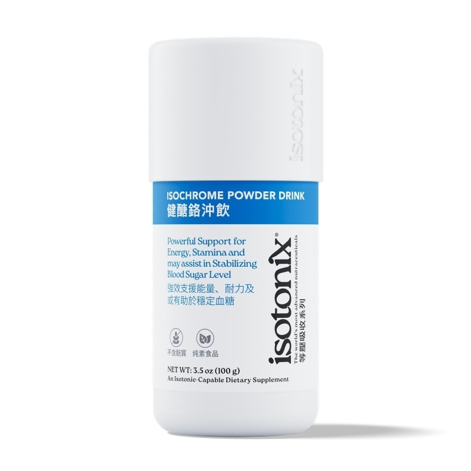
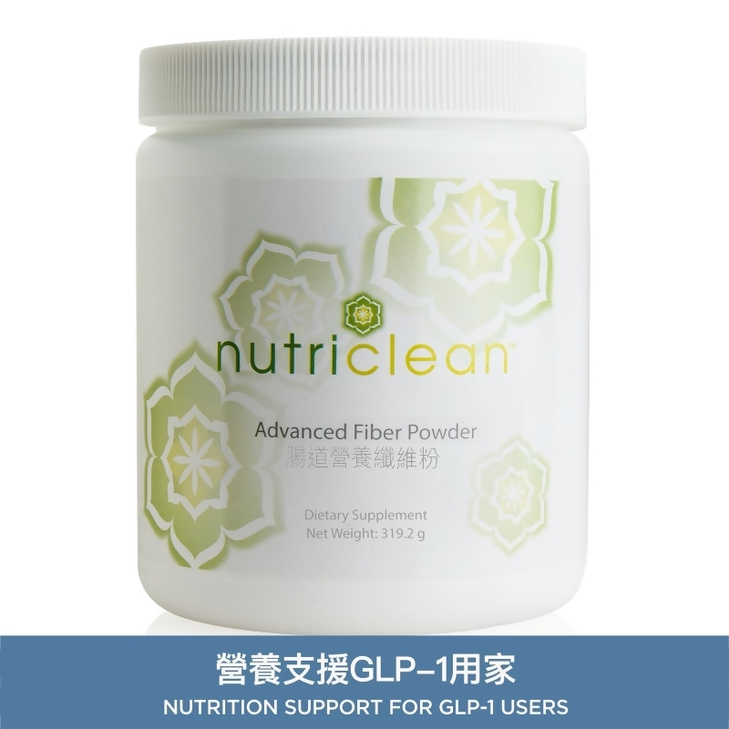

階段 01
初期
胰臟加班工作，雖然尚能維持平衡，但身體已出現潛在負擔。
一個容易記住的比喻：胰島素是鑰匙，細胞受體是門鎖，葡萄糖要進門才能變成能量。
當門鎖開始生鏽（敏感度下降），鑰匙愈來愈難開鎖，葡萄糖堆積在血液中，胰臟就被迫加班分泌更多鑰匙——這就是醣代謝風險的起點。
風險通常不是一夜之間出現，而是由初期負擔逐步累積。愈早留意日常訊號，愈有空間調整。
胰臟加班工作，雖然尚能維持平衡，但身體已出現潛在負擔。
門鎖嚴重生鏽，胰臟加班也趕不及，血糖開始偏高，容易出現餐後昏昏欲睡、腹部脂肪堆積。
胰臟調節能力顯著下降，無法有效調控血糖，健康狀況大打折扣。
長期血糖不平穩會增加身體器官與血管系統的日常負擔。
不靠極端方法。飲食順序、飯後走動、睡眠與腰圍管理，都是可持續的槓桿。
日常生活是主線；合適的營養補充可作為支援。以下產品圖片可直接點擊前往官方頁面了解詳情。

關鍵營養素「鉻」參與碳水化合物與糖類的正常代謝，輔助維持身體對營養的吸收與利用效率。等滲透配方有助快速吸收。
查看產品詳情 →
結合可溶性膳食纖維、菊糖與益生菌，支援腸道平衡與正常排便規律；纖維亦有助日常飲食中更平穩地應對糖分負荷。
查看產品詳情 →| 營養素 | 角色比喻 | 它如何幫你？ |
|---|---|---|
| 鉻 (Chromium) | 🔑 代謝助手 | 人體必需微量元素，參與碳水化合物與糖類的正常代謝，輔助維持身體對營養的吸收與利用效率。 |
| 魚油 (Omega-3) | 🛡️ 調節助手 | 富含 EPA 與 DHA 必需脂肪酸，幫助調節生理機能，應對日常飲食習慣帶來的身體負擔，維護整體健康。 |
上表為教育資訊中的營養角色說明。產品卡片以你提供的兩個官方連結為準；點擊產品圖或卡片即可前往 SHOP.COM 香港頁面。